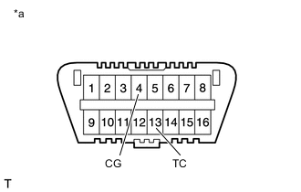
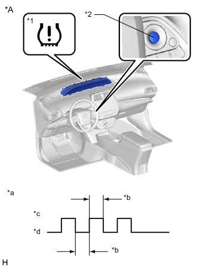
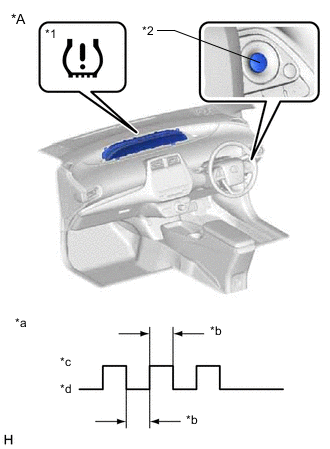

Note
Initialization can be confirmed through the tire pressure warning light.
The order in which the data is received is random.
If the signals from all the tire pressure warning valve and transmitters are received, initialization is completed.
Initialization is completed when the Data List "ID Tire Inflation Pressure" display shows the correct pressures.
Initialization is normally completed within a few minutes.
It may take a few minutes until the values are displayed. If the values are not displayed after a few minutes, perform troubleshooting according to the inspection procedure for DTCs C2121/21 to C2124/24.
If initialization has not been completed successfully, DTC C2177/77 is stored after a vehicle speed of 40 km/h (25 mph) or more is detected for 20 minutes or more.
During test mode (sensor check mode), the system will not change to initialization mode even if the initialization procedure is performed.
w/ ID Switching Function:
While the answer-back function for the ID switching function is operating, the system will not change to initialization mode even if the initialization procedure is performed.

| *a | Front view of DLC3 |
Initialization can be terminated by connecting terminals 13 (TC) and 4 (CG) of the DLC3.
BEFORE INITIALIZATION
Set the tire pressure to the specified value.
Note
Refer to the link as the procedure for adjusting the tire pressures differs depending on the temperature of the tires.
INITIALIZATION PROCEDURE
Tech Tips
The tire pressure warning system illuminates the tire pressure warning light to warn the driver when any of the following conditions are met:
Due to the operation of the steering pad switch assembly, the tire pressure drops to approximately 80% or less of the tire pressure set during system initialization.
The tire pressure drastically decreases (approximately 20 kPa (0.2 kgf/cm2, 2.9 psi) or more within several minutes) to approximately 80% or less of the tire pressure* when the tires are warmed.
*: If initialization is performed and the vehicle is driven for a certain period of time, the tire pressure set during system initialization is adjusted and set to the tire pressure when the tires are warmed from the driving conditions.
Note
If the tire pressure is decreased approximately 20 kPa (0.2 kgf/cm2, 2.9 psi) or more in order to adjust the tire pressure, even if the adjusted tire pressure is 80% or more than the tire pressure set during system initialization, the tire pressure warning light may illuminate if the tire pressure drops below 80% of the tire pressure set when the tires are warmed. In this case, perform initialization again.
Turn the power switch on (IG).

| *A | for LHD |
| *1 | Tire Pressure Warning Light |
| *2 | "ENTER" Switch (Steering Pad Switch Assembly) |
| *a | Tire Pressure Warning Light Output Pattern |
| *b | 1 sec. |
| *c | ON |
| *d | OFF |

| *A | for RHD |
| *1 | Tire Pressure Warning Light |
| *2 | "ENTER" Switch (Steering Pad Switch Assembly) |
| *a | Tire Pressure Warning Light Output Pattern |
| *b | 1 sec. |
| *c | ON |
| *d | OFF |
Operate the steering pad switch assembly, select "TPMS" on the multi-information display and press and hold the "ENTER" switch (steering pad switch assembly) until the tire pressure warming light blinks 3 times.
Turn the power switch off.
Connect the GTS to the DLC3.
Turn the power switch on (IG) and turn the GTS on.
Enter the following menus: Chassis / Tire Pressure Monitor / Data List.
Check that initialization has been completed.
Confirm that the tire pressure data of all tires is displayed on the GTS screen.